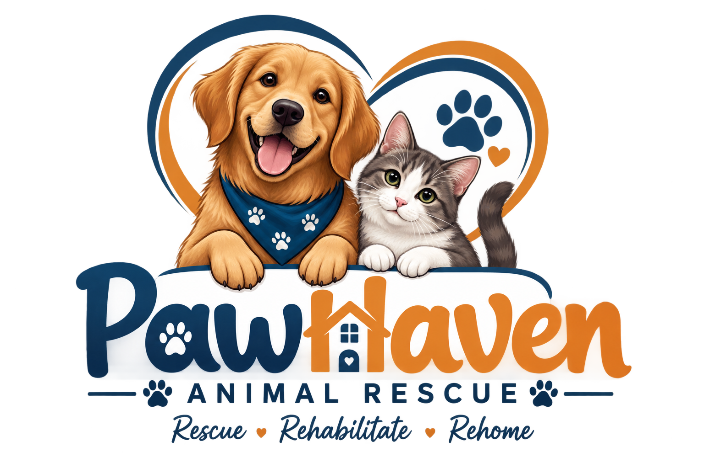

Our Mission
To rescue, rehabilitate, and rehome abandoned and stray animals while promoting responsible pet ownership within our community.

Paw Haven Animal Rescue began as a small volunteer effort to help the growing number of stray and abandoned dogs and cats in our part of Johannesburg. What started as a handful of foster homes has grown into a registered non-profit organisation with a dedicated shelter space, a network of foster carers, and a community of adopters, donors, and volunteers.

To rescue, rehabilitate, and rehome abandoned and stray animals while promoting responsible pet ownership within our community.
A community where every companion animal has a safe, permanent home.
Paw Haven is run by a small core team supported by a wider group of regular volunteers who assist with animal care, adoption events, and administration.
Yes. Use the enquiry page to ask about volunteering or sponsoring animal care.
Visit the Adopt page, choose an animal profile and use the enquiry form to send your question.